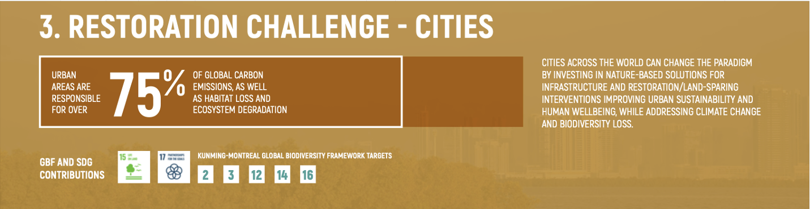

UN Restoration Challenge #1
The Cities Challenge
Aiming to restore urban spaces and coastal ecosystems in more than 1,000 cities across the globe by 2030. Encompassing universities, colleges, government organizations, botanical gardens, wetlands, beaches, and municipal zones to foster climate resilience.